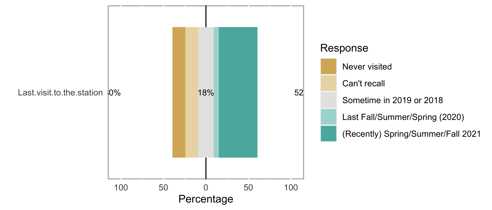

This document imports, cleans, and summarizes data from the Fall 2021 NARC member survey.
Since the survey data are in a Google sheet, we need to authenticate to Google to retrieve them. The following code chunk should not be run interactively.
The earlier step downloaded the data to csv/narc-fall-2021-survey.csv.
## Rows: 33 Columns: 40## ── Column specification ──────────────────────
## Delimiter: ","
## chr (40): Timestamp, Please describe your ...##
## ℹ Use `spec()` to retrieve the full column specification for this data.
## ℹ Specify the column types or set `show_col_types = FALSE` to quiet this message.We’ll rename some of the variables to make them easier to deal with.
Rick is experimenting with the likert package. Here is a reference:
https://jakec007.github.io/2021-06-23-R-likert/

Parsing participated_in and would_participate_in is going to take some work.
The largest percentage of respondents who have modest to high levels of interest were found for the following activities:
| Activity | Interested or Very Interested | Occasional or regular experience |
|---|---|---|
| APRS | 61% | 31% |
| FT8 | 57% | 29% |
| fldigi | 53% | 25% |
| Digital voice | 48% | 26% |
| CW | 38% | 27% |
| Winlink | 33% | 12% |
| Satellite | 32% | 5% |
| Contesting | 28% | 28% |
| Packet | 26% | 15% |
| ATV | 23% | 6% |
| AREDN | 20% | 0% |
More than half of respondents have keys and have visited in the last two years.